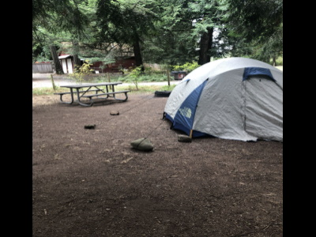
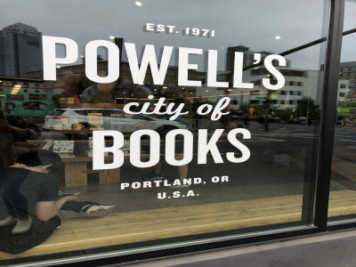

The first day in Portland we stayed with our friends aunts who had a nice apartment along the river.
That night we had wandered along the river, and discovered a small little beach tucked away behind
some foliage. The trampled down path through the greenery made it clear we weren't the only ones to
have stumbled onto this place. Ever if we weren't the first ones there, it was still a mystical place.
A simple step forward and we had disappeared from the city. Even though we could see the skyline, it
didn't seem like we were there anymore. The best part was the spontaneous swim we went for in the middle
of the night. We walked back soaking wet, and all immediately hopped in the shower. We all crammed in
together since none of us could wait to warm up.

After our first night in Portland we had rented a spot at a campsite. Unfortunately we ran into a
slight problem. The ground was
so rocky we couldn't use stakes to hold the tent down. Well being college students we did what we did
best. We improvised and found a way to make it work. Who needs stakes when you have giant rocks to hold
the tent in place. It may not have been pretty but it worked. Even better we made it through we no
stubbed toes!
Strings, Stakes, and... Rocks?

Our second day in Portland we went and explored the city. I was able to strike a deal with the three
of them that if I finally bought a pair of Vans that they would all go swing dancing with me. We were
on the west coast, we had to go West Coast Swing! We bounced around from store to store, but without
a doubt we spent time in Powell's then all the other stores combined. Lost amid hundreds of bookshelves,
we were there for hours and I still didn't make it through the whole store.

Portland is a city with a lot of character and that was something I was told the first day I got there.
From exploring the city it was safe to say that what I was told was true. The number of ma and pop shops
was great to see, and each was very unique. It could just be the fact that I don't live there, but it was
very different from any other city I've been too. I've traveled quite a bit too.